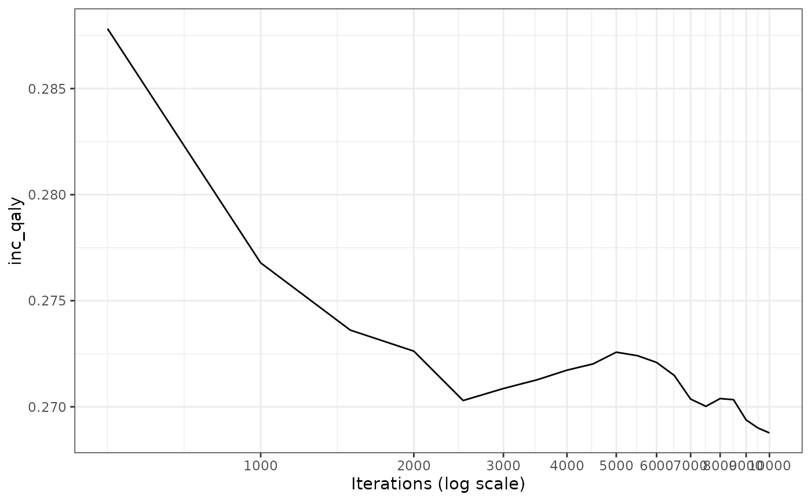

Plot moving average
plot_convergence.RdThis function plots the moving average of a user-defined variable.
Usage
plot_convergence(
df,
param,
block_size = 500,
conv_limit = 0,
y_min = NULL,
y_max = NULL,
breaks = NULL,
variance = FALSE
)Arguments
- df
a dataframe.
- param
character string. Name of variable of the dataframe for which to plot the moving average.
- block_size
numeric. Define the size of the blocks at which the mean of the variable (`param`) has to be defined and plotted. Default is 500 iterations.
- conv_limit
numeric. Define the convergence limit, under which the relative change between block of iterations should lie.
- y_min
numeric. Define the minimum value of the parameter to display on th y-axis of the convergence plot.If NULL (default, not defined), this will automatically be set near the minimum value of `param`.
- y_max
numeric. Define the maximum value of the parameter to display on th y-axis of the convergence plot. If NULL (default, not defined), this will automatically be set near the maximum value of `param`.
- breaks
numeric. Number of iterations at which the breaks should be placed on the plot. Default is NULL, hence a tenth of the length of the vector `param` is used.
- variance
logical. Determine whether the variance of the vector should be plotted instead of the mean. Default is FALSE.
Examples
# Checking the moving average of the incremental QALYs using the example data.
data(df_pa)
plot_convergence(df = df_pa,
param = "inc_qaly"
)
